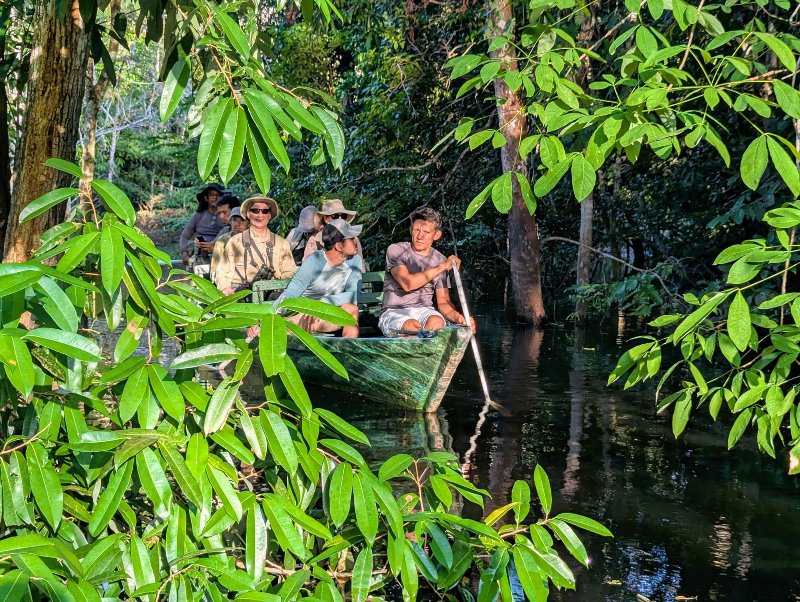

5 Days · 4 NightsAmazon
Explorers
A five-day immersion in the Rio Negro basin: canopy observation tower at dawn, Igapó flooded forest by canoe, five nights between eco-lodge and riverboat. Passing through pink river dolphin habitat, an indigenous village, and every moment guided by a specialist naturalist.
- Ducke Reserve canopy tower at first light
- Pink river dolphin habitat, Rio Negro
- Indigenous village visit